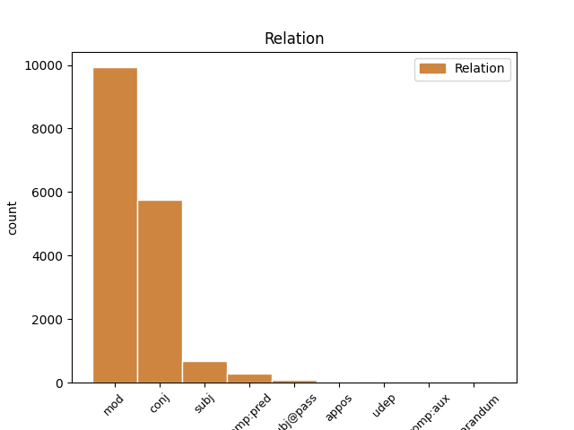
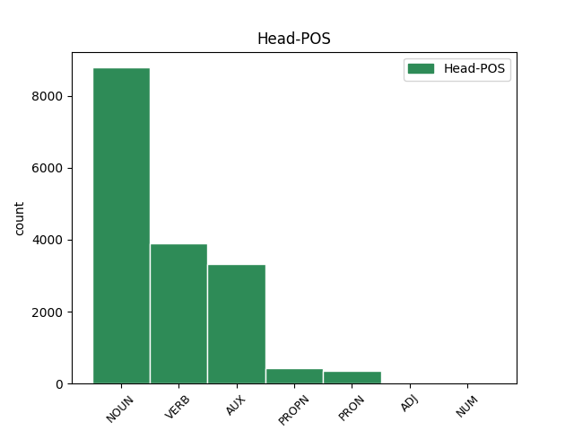
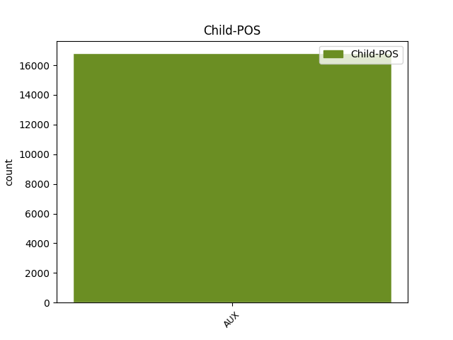

Distribution of features within this leaf



Agreement Rules sorted by frequency.
- When the dependent token is the modifer(mod) of the head token, and the dependent token is AUX.
1 Abgerundet _ _ _ _ 0 _ _ _
2 wird _ _ _ _ 0 _ _ _
3 die _ _ _ _ 0 _ _ _
4 Palette _ _ _ _ 0 _ _ _
5 durch _ _ _ _ 0 _ _ _
6 einen _ _ _ _ 0 _ _ _
7 4-Port-USB-Hub Hub NOUN NN Gender=Masc|Number=Sing|Person=3 0 _ _ _
8 , _ _ _ _ 0 _ _ _
9 der _ _ _ _ 0 _ _ _
10 ebenfalls _ _ _ _ 0 _ _ _
11 für _ _ _ _ 0 _ _ _
12 die _ _ _ _ 0 _ _ _
13 neue _ _ _ _ 0 _ _ _
14 Version _ _ _ _ 0 _ _ _
15 des _ _ _ _ 0 _ _ _
16 Standards _ _ _ _ 0 _ _ _
17 vorbereitet _ _ _ _ 0 _ _ _
18 ist sein AUX VAFIN Mood=Ind|Number=Sing|Person=3|Tense=Pres|VerbForm=Fin 7 mod _ _
19 . _ _ _ _ 0 _ _ _
1 Erste _ _ _ _ 0 _ _ _
2 Prototypen _ _ _ _ 0 _ _ _
3 der _ _ _ _ 0 _ _ _
4 150-GByte-CD _ _ _ _ 0 _ _ _
5 und _ _ _ _ 0 _ _ _
6 entsprechender _ _ _ _ 0 _ _ _
7 Laufwerke _ _ _ _ 0 _ _ _
8 seien sein AUX VAFIN Mood=Ind|Number=Plur|Person=3|Tense=Pres|VerbForm=Fin 0 _ _ _
9 zwar _ _ _ _ 0 _ _ _
10 im _ _ _ _ 0 _ _ _
11 Labor _ _ _ _ 0 _ _ _
12 bereits _ _ _ _ 0 _ _ _
13 funktionsfähig _ _ _ _ 0 _ _ _
14 , _ _ _ _ 0 _ _ _
15 sollen sollen AUX VMFIN Mood=Ind|Number=Plur|Person=3|Tense=Pres|VerbForm=Fin|VerbType=Mod 8 conj _ _
16 aber _ _ _ _ 0 _ _ _
17 nicht _ _ _ _ 0 _ _ _
18 präsentiert _ _ _ _ 0 _ _ _
19 werden _ _ _ _ 0 _ _ _
20 , _ _ _ _ 0 _ _ _
21 erläuterte _ _ _ _ 0 _ _ _
22 Susanna _ _ _ _ 0 _ _ _
23 Orlic _ _ _ _ 0 _ _ _
24 von _ _ _ _ 0 _ _ _
25 der _ _ _ _ 0 _ _ _
26 TU _ _ _ _ 0 _ _ _
27 Berlin _ _ _ _ 0 _ _ _
28 gegenüber _ _ _ _ 0 _ _ _
29 heise _ _ _ _ 0 _ _ _
30 online _ _ _ _ 0 _ _ _
31 . _ _ _ _ 0 _ _ _
1 Wer _ _ _ _ 0 _ _ _
2 darauf _ _ _ _ 0 _ _ _
3 verzichten _ _ _ _ 0 _ _ _
4 möchte mögen AUX VMFIN Mood=Ind|Number=Sing|Person=3|Tense=Pres|VerbForm=Fin|VerbType=Mod 6 subj _ _
5 , _ _ _ _ 0 _ _ _
6 findet finden VERB VVFIN Mood=Ind|Number=Sing|Person=3|Tense=Pres|VerbForm=Fin 0 _ _ _
7 auch _ _ _ _ 0 _ _ _
8 im _ _ _ _ 0 _ _ _
9 Internet _ _ _ _ 0 _ _ _
10 frei _ _ _ _ 0 _ _ _
11 erhältliche _ _ _ _ 0 _ _ _
12 Spiele _ _ _ _ 0 _ _ _
13 , _ _ _ _ 0 _ _ _
14 unter _ _ _ _ 0 _ _ _
15 denen _ _ _ _ 0 _ _ _
16 sich _ _ _ _ 0 _ _ _
17 Klassiker _ _ _ _ 0 _ _ _
18 wie _ _ _ _ 0 _ _ _
19 Pac-Man _ _ _ _ 0 _ _ _
20 , _ _ _ _ 0 _ _ _
21 Pong _ _ _ _ 0 _ _ _
22 oder _ _ _ _ 0 _ _ _
23 Breakout _ _ _ _ 0 _ _ _
24 finden _ _ _ _ 0 _ _ _
25 . _ _ _ _ 0 _ _ _
1 Will wollen AUX VMFIN Mood=Ind|Number=Sing|Person=3|Tense=Pres|VerbForm=Fin|VerbType=Mod 8 comp:pred _ _
2 ein _ _ _ _ 0 _ _ _
3 Anbieter _ _ _ _ 0 _ _ _
4 trotzdem _ _ _ _ 0 _ _ _
5 Daten _ _ _ _ 0 _ _ _
6 erheben _ _ _ _ 0 _ _ _
7 , _ _ _ _ 0 _ _ _
8 benötigt benötigen VERB VVFIN Mood=Ind|Number=Sing|Person=3|Tense=Pres|VerbForm=Fin 0 _ _ _
9 er _ _ _ _ 0 _ _ _
10 dazu _ _ _ _ 0 _ _ _
11 die _ _ _ _ 0 _ _ _
12 ausdrückliche _ _ _ _ 0 _ _ _
13 Einwilligung _ _ _ _ 0 _ _ _
14 des _ _ _ _ 0 _ _ _
15 Konsumenten _ _ _ _ 0 _ _ _
16 . _ _ _ _ 0 _ _ _
1 " _ _ _ _ 0 _ _ _
2 Waffen- _ _ _ _ 0 _ _ _
3 und _ _ _ _ 0 _ _ _
4 Organhandel _ _ _ _ 0 _ _ _
5 ist _ _ _ _ 0 _ _ _
6 in _ _ _ _ 0 _ _ _
7 den _ _ _ _ 0 _ _ _
8 USA _ _ _ _ 0 _ _ _
9 nicht _ _ _ _ 0 _ _ _
10 prinzipiell _ _ _ _ 0 _ _ _
11 verboten _ _ _ _ 0 _ _ _
12 , _ _ _ _ 0 _ _ _
13 und _ _ _ _ 0 _ _ _
14 was _ _ _ _ 0 _ _ _
15 legal _ _ _ _ 0 _ _ _
16 gehandelt _ _ _ _ 0 _ _ _
17 wird werden AUX VAFIN Mood=Ind|Number=Sing|Person=3|Tense=Pres|VerbForm=Fin 19 subj@pass _ _
18 , _ _ _ _ 0 _ _ _
19 darf dürfen AUX VMFIN Mood=Ind|Number=Sing|Person=3|Tense=Pres|VerbForm=Fin|VerbType=Mod 0 _ _ _
20 nicht _ _ _ _ 0 _ _ _
21 einfach _ _ _ _ 0 _ _ _
22 aus _ _ _ _ 0 _ _ _
23 dem _ _ _ _ 0 _ _ _
24 Auktionsangebot _ _ _ _ 0 _ _ _
25 gelöscht _ _ _ _ 0 _ _ _
26 werden _ _ _ _ 0 _ _ _
27 " _ _ _ _ 0 _ _ _
28 , _ _ _ _ 0 _ _ _
29 sagte _ _ _ _ 0 _ _ _
30 Oliver _ _ _ _ 0 _ _ _
31 Samwer _ _ _ _ 0 _ _ _
32 von _ _ _ _ 0 _ _ _
33 eBay-Deutschland _ _ _ _ 0 _ _ _
34 auf _ _ _ _ 0 _ _ _
35 Nachfrage _ _ _ _ 0 _ _ _
36 von _ _ _ _ 0 _ _ _
37 c't _ _ _ _ 0 _ _ _
38 . _ _ _ _ 0 _ _ _
1 Ohne _ _ _ _ 0 _ _ _
2 den _ _ _ _ 0 _ _ _
3 guten _ _ _ _ 0 _ _ _
4 Athanasius _ _ _ _ 0 _ _ _
5 gäbe _ _ _ _ 0 _ _ _
6 es _ _ _ _ 0 _ _ _
7 vielleicht _ _ _ _ 0 _ _ _
8 nicht _ _ _ _ 0 _ _ _
9 so _ _ _ _ 0 _ _ _
10 beschauliche _ _ _ _ 0 _ _ _
11 Shows _ _ _ _ 0 _ _ _
12 voller _ _ _ _ 0 _ _ _
13 Grooves _ _ _ _ 0 _ _ _
14 wie _ _ _ _ 0 _ _ _
15 den _ _ _ _ 0 _ _ _
16 " _ _ _ _ 0 _ _ _
17 Familientag _ _ _ _ 0 _ _ _
18 Kryptografie _ _ _ _ 0 _ _ _
19 " _ _ _ _ 0 _ _ _
20 am _ _ _ _ 0 _ _ _
21 Heinz _ _ _ _ 0 _ _ _
22 Nixdorf _ _ _ _ 0 _ _ _
23 Museums-Forum _ _ _ _ 0 _ _ _
24 , _ _ _ _ 0 _ _ _
25 das _ _ _ _ 0 _ _ _
26 zum _ _ _ _ 0 _ _ _
27 4. _ _ _ _ 0 _ _ _
28 Feburar _ _ _ _ 0 _ _ _
29 2001 _ _ _ _ 0 _ _ _
30 eigentlich _ _ _ _ 0 _ _ _
31 in _ _ _ _ 0 _ _ _
32 die _ _ _ _ 0 _ _ _
33 Abteilung Abteilung NOUN NN Gender=Fem|Number=Sing|Person=3 0 _ _ _
34 " _ _ _ _ 0 _ _ _
35 Was _ _ _ _ 0 _ _ _
36 wird werden AUX VAFIN Mood=Ind|Number=Sing|Person=3|Tense=Pres|VerbForm=Fin 33 appos _ _
37 " _ _ _ _ 0 _ _ _
38 gehört _ _ _ _ 0 _ _ _
39 . _ _ _ _ 0 _ _ _
1 Jetzt _ _ _ _ 0 _ _ _
2 sieht sehen VERB VVFIN Mood=Ind|Number=Sing|Person=3|Tense=Pres|VerbForm=Fin 0 _ _ _
3 es _ _ _ _ 0 _ _ _
4 so _ _ _ _ 0 _ _ _
5 aus _ _ _ _ 0 _ _ _
6 , _ _ _ _ 0 _ _ _
7 als _ _ _ _ 0 _ _ _
8 wolle wollen AUX VMFIN Mood=Ind|Number=Sing|Person=3|Tense=Pres|VerbForm=Fin|VerbType=Mod 2 udep _ _
9 Sun _ _ _ _ 0 _ _ _
10 Microsystems _ _ _ _ 0 _ _ _
11 ganz _ _ _ _ 0 _ _ _
12 darauf _ _ _ _ 0 _ _ _
13 verzichten _ _ _ _ 0 _ _ _
14 , _ _ _ _ 0 _ _ _
15 Java _ _ _ _ 0 _ _ _
16 selbst _ _ _ _ 0 _ _ _
17 den _ _ _ _ 0 _ _ _
18 ISO-Gremien _ _ _ _ 0 _ _ _
19 vorzulegen _ _ _ _ 0 _ _ _
20 . _ _ _ _ 0 _ _ _
1 " _ _ _ _ 0 _ _ _
2 Das _ _ _ _ 0 _ _ _
3 wäre sein AUX VAFIN Mood=Ind|Number=Sing|Person=3|Tense=Pres|VerbForm=Fin 15 comp:aux _ _
4 so _ _ _ _ 0 _ _ _
5 , _ _ _ _ 0 _ _ _
6 als _ _ _ _ 0 _ _ _
7 ob _ _ _ _ 0 _ _ _
8 die _ _ _ _ 0 _ _ _
9 Post _ _ _ _ 0 _ _ _
10 jeden _ _ _ _ 0 _ _ _
11 Brief _ _ _ _ 0 _ _ _
12 aufmachen _ _ _ _ 0 _ _ _
13 und _ _ _ _ 0 _ _ _
14 lesen _ _ _ _ 0 _ _ _
15 müsste müssen AUX VMFIN Mood=Ind|Number=Sing|Person=3|Tense=Pres|VerbForm=Fin|VerbType=Mod 0 _ _ _
16 . _ _ _ _ 0 _ _ _
17 " _ _ _ _ 0 _ _ _
1 Auch _ _ _ _ 0 _ _ _
2 wenn _ _ _ _ 0 _ _ _
3 die _ _ _ _ 0 _ _ _
4 von _ _ _ _ 0 _ _ _
5 ihm _ _ _ _ 0 _ _ _
6 angebotenen _ _ _ _ 0 _ _ _
7 Top _ _ _ _ 0 _ _ _
8 Level _ _ _ _ 0 _ _ _
9 Domains _ _ _ _ 0 _ _ _
10 nicht _ _ _ _ 0 _ _ _
11 von _ _ _ _ 0 _ _ _
12 jedem _ _ _ _ 0 _ _ _
13 Internet-Nutzer _ _ _ _ 0 _ _ _
14 in _ _ _ _ 0 _ _ _
15 der _ _ _ _ 0 _ _ _
16 Welt _ _ _ _ 0 _ _ _
17 ohne _ _ _ _ 0 _ _ _
18 Erweiterung _ _ _ _ 0 _ _ _
19 verwendet _ _ _ _ 0 _ _ _
20 werden _ _ _ _ 0 _ _ _
21 könnten _ _ _ _ 0 _ _ _
22 , _ _ _ _ 0 _ _ _
23 so _ _ _ _ 0 _ _ _
24 sei sein AUX VAFIN Mood=Ind|Number=Sing|Person=3|Tense=Pres|VerbForm=Fin 25 reparandum _ _
25 werde werden AUX VAFIN Mood=Ind|Number=Sing|Person=3|Tense=Pres|VerbForm=Fin 0 _ _ _
26 doch _ _ _ _ 0 _ _ _
27 ein _ _ _ _ 0 _ _ _
28 relativ _ _ _ _ 0 _ _ _
29 großer _ _ _ _ 0 _ _ _
30 Kreis _ _ _ _ 0 _ _ _
31 angesprochen _ _ _ _ 0 _ _ _
32 . _ _ _ _ 0 _ _ _
Disagree Examples:
1 Seit _ _ _ _ 0 _ _ _
2 dem _ _ _ _ 0 _ _ _
3 heutigen _ _ _ _ 0 _ _ _
4 Mittwochmorgen _ _ _ _ 0 _ _ _
5 kursierten _ _ _ _ 0 _ _ _
6 an _ _ _ _ 0 _ _ _
7 der _ _ _ _ 0 _ _ _
8 Frankfurter _ _ _ _ 0 _ _ _
9 Börse _ _ _ _ 0 _ _ _
10 Gerüchte Gerücht NOUN NN Gender=Neut|Number=Plur|Person=3 0 _ _ _
11 , _ _ _ _ 0 _ _ _
12 denen _ _ _ _ 0 _ _ _
13 zufolge _ _ _ _ 0 _ _ _
14 Telekom-Chef _ _ _ _ 0 _ _ _
15 Ron _ _ _ _ 0 _ _ _
16 Sommer _ _ _ _ 0 _ _ _
17 zurücktreten _ _ _ _ 0 _ _ _
18 wird werden AUX VAFIN Mood=Ind|Number=Sing|Person=3|Tense=Pres|VerbForm=Fin 10 mod _ _
19 . _ _ _ _ 0 _ _ _
1 Das _ _ _ _ 0 _ _ _
2 zwischen _ _ _ _ 0 _ _ _
3 den _ _ _ _ 0 _ _ _
4 beiden _ _ _ _ 0 _ _ _
5 Unternehmen _ _ _ _ 0 _ _ _
6 vereinbarte _ _ _ _ 0 _ _ _
7 Entgelt _ _ _ _ 0 _ _ _
8 soll _ _ _ _ 0 _ _ _
9 " _ _ _ _ 0 _ _ _
10 deutlich _ _ _ _ 0 _ _ _
11 " _ _ _ _ 0 _ _ _
12 unter _ _ _ _ 0 _ _ _
13 dem _ _ _ _ 0 _ _ _
14 derzeitigen _ _ _ _ 0 _ _ _
15 regulierten _ _ _ _ 0 _ _ _
16 Preis Preis NOUN NN Gender=Masc|Number=Sing|Person=3 0 _ _ _
17 liegen _ _ _ _ 0 _ _ _
18 , _ _ _ _ 0 _ _ _
19 den _ _ _ _ 0 _ _ _
20 Telekommunikationsunternehmen _ _ _ _ 0 _ _ _
21 für _ _ _ _ 0 _ _ _
22 die _ _ _ _ 0 _ _ _
23 gleiche _ _ _ _ 0 _ _ _
24 Leistung _ _ _ _ 0 _ _ _
25 an _ _ _ _ 0 _ _ _
26 die _ _ _ _ 0 _ _ _
27 Deutsche _ _ _ _ 0 _ _ _
28 Telekom _ _ _ _ 0 _ _ _
29 zahlen _ _ _ _ 0 _ _ _
30 müssen müssen AUX VMFIN Mood=Ind|Number=Plur|Person=3|Tense=Pres|VerbForm=Fin|VerbType=Mod 16 mod _ _
31 . _ _ _ _ 0 _ _ _
1 Zur _ _ _ _ 0 _ _ _
2 Anzahl _ _ _ _ 0 _ _ _
3 der _ _ _ _ 0 _ _ _
4 Betroffenen _ _ _ _ 0 _ _ _
5 konnte können AUX VMFIN Mood=Ind|Number=Sing|Person=3|Tense=Past|VerbForm=Fin|VerbType=Mod 0 _ _ _
6 Freenet-Sprecherin _ _ _ _ 0 _ _ _
7 Elke _ _ _ _ 0 _ _ _
8 Rüter _ _ _ _ 0 _ _ _
9 nichts _ _ _ _ 0 _ _ _
10 sagen _ _ _ _ 0 _ _ _
11 , _ _ _ _ 0 _ _ _
12 es _ _ _ _ 0 _ _ _
13 hätten haben AUX VAFIN Mood=Ind|Number=Plur|Person=3|Tense=Pres|VerbForm=Fin 5 conj _ _
14 sich _ _ _ _ 0 _ _ _
15 jedoch _ _ _ _ 0 _ _ _
16 insgesamt _ _ _ _ 0 _ _ _
17 höchstens _ _ _ _ 0 _ _ _
18 tausend _ _ _ _ 0 _ _ _
19 Personen _ _ _ _ 0 _ _ _
20 eingetragen _ _ _ _ 0 _ _ _
21 . _ _ _ _ 0 _ _ _
1 Andererseits _ _ _ _ 0 _ _ _
2 soll sollen AUX VMFIN Mood=Ind|Number=Sing|Person=3|Tense=Pres|VerbForm=Fin|VerbType=Mod 0 _ _ _
3 geprüft _ _ _ _ 0 _ _ _
4 werden _ _ _ _ 0 _ _ _
5 , _ _ _ _ 0 _ _ _
6 inwieweit _ _ _ _ 0 _ _ _
7 die _ _ _ _ 0 _ _ _
8 bisher _ _ _ _ 0 _ _ _
9 fälligen _ _ _ _ 0 _ _ _
10 Summen _ _ _ _ 0 _ _ _
11 zwischen _ _ _ _ 0 _ _ _
12 75 _ _ _ _ 0 _ _ _
13 und _ _ _ _ 0 _ _ _
14 600 _ _ _ _ 0 _ _ _
15 Mark _ _ _ _ 0 _ _ _
16 pro _ _ _ _ 0 _ _ _
17 Gerät _ _ _ _ 0 _ _ _
18 noch _ _ _ _ 0 _ _ _
19 zeitgemäß _ _ _ _ 0 _ _ _
20 sind sein AUX VAFIN Mood=Ind|Number=Plur|Person=3|Tense=Pres|VerbForm=Fin 2 subj@pass _ _
21 , _ _ _ _ 0 _ _ _
22 da _ _ _ _ 0 _ _ _
23 angesichts _ _ _ _ 0 _ _ _
24 des _ _ _ _ 0 _ _ _
25 technischen _ _ _ _ 0 _ _ _
26 Fortschritts _ _ _ _ 0 _ _ _
27 mittlerweile _ _ _ _ 0 _ _ _
28 Abgabe _ _ _ _ 0 _ _ _
29 und _ _ _ _ 0 _ _ _
30 Kaufpreis _ _ _ _ 0 _ _ _
31 gerade _ _ _ _ 0 _ _ _
32 in _ _ _ _ 0 _ _ _
33 den _ _ _ _ 0 _ _ _
34 unteren _ _ _ _ 0 _ _ _
35 Preissegmenten _ _ _ _ 0 _ _ _
36 in _ _ _ _ 0 _ _ _
37 einem _ _ _ _ 0 _ _ _
38 teilweise _ _ _ _ 0 _ _ _
39 deutlichen _ _ _ _ 0 _ _ _
40 Missverhältnis _ _ _ _ 0 _ _ _
41 stehen _ _ _ _ 0 _ _ _
42 und _ _ _ _ 0 _ _ _
43 die _ _ _ _ 0 _ _ _
44 Anbieter _ _ _ _ 0 _ _ _
45 in _ _ _ _ 0 _ _ _
46 Deutschland _ _ _ _ 0 _ _ _
47 unangemessen _ _ _ _ 0 _ _ _
48 benachteiligen _ _ _ _ 0 _ _ _
49 würden _ _ _ _ 0 _ _ _
50 . _ _ _ _ 0 _ _ _
1 Wann _ _ _ _ 0 _ _ _
2 die _ _ _ _ 0 _ _ _
3 Spiele _ _ _ _ 0 _ _ _
4 auf _ _ _ _ 0 _ _ _
5 den _ _ _ _ 0 _ _ _
6 Markt _ _ _ _ 0 _ _ _
7 kommen _ _ _ _ 0 _ _ _
8 sollen sollen AUX VMFIN Mood=Ind|Number=Plur|Person=3|Tense=Pres|VerbForm=Fin|VerbType=Mod 10 subj _ _
9 , _ _ _ _ 0 _ _ _
10 ist sein AUX VAFIN Mood=Ind|Number=Sing|Person=3|Tense=Pres|VerbForm=Fin 0 _ _ _
11 bisher _ _ _ _ 0 _ _ _
12 ebensowenig _ _ _ _ 0 _ _ _
13 bekannt _ _ _ _ 0 _ _ _
14 , _ _ _ _ 0 _ _ _
15 wie _ _ _ _ 0 _ _ _
16 die _ _ _ _ 0 _ _ _
17 Höhe _ _ _ _ 0 _ _ _
18 der _ _ _ _ 0 _ _ _
19 Summe _ _ _ _ 0 _ _ _
20 , _ _ _ _ 0 _ _ _
21 die _ _ _ _ 0 _ _ _
22 Electronic _ _ _ _ 0 _ _ _
23 Arts _ _ _ _ 0 _ _ _
24 an _ _ _ _ 0 _ _ _
25 den _ _ _ _ 0 _ _ _
26 Besitzer _ _ _ _ 0 _ _ _
27 der _ _ _ _ 0 _ _ _
28 Rechte _ _ _ _ 0 _ _ _
29 an _ _ _ _ 0 _ _ _
30 Harry _ _ _ _ 0 _ _ _
31 Potter _ _ _ _ 0 _ _ _
32 , _ _ _ _ 0 _ _ _
33 Time _ _ _ _ 0 _ _ _
34 Warner _ _ _ _ 0 _ _ _
35 , _ _ _ _ 0 _ _ _
36 bezahlt _ _ _ _ 0 _ _ _
37 hat _ _ _ _ 0 _ _ _
38 . _ _ _ _ 0 _ _ _